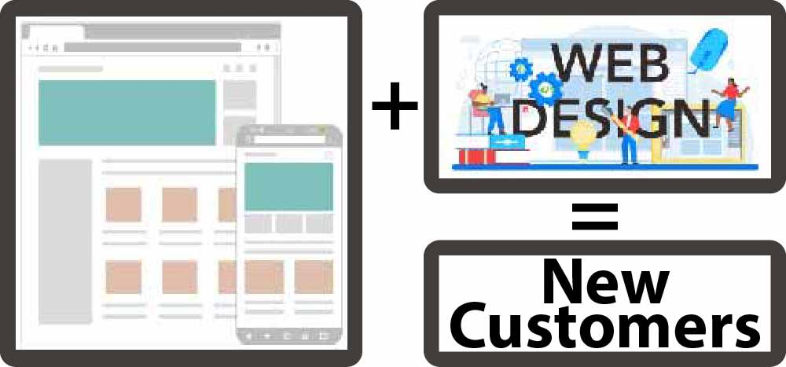

INTRODUCTIONS-Getting Noticed
Who is this for? It doesn't matter if you are a mulit-location corporation or a small family business. These mini-websites are designed to get the attention of your potential customers. Within the website there are plenty of opportunities for your customers to link to your main website. Brevity is often the key to getting someone’s attention.
How do I get started? Our team will get together with you and discuss the best formats and platforms for your introductory website. We will then put together some design ideas for you to review. After your review, we will produce and post your new introdution website. Our team is also there for you to help with the design of your main website.**Click here to learn more**